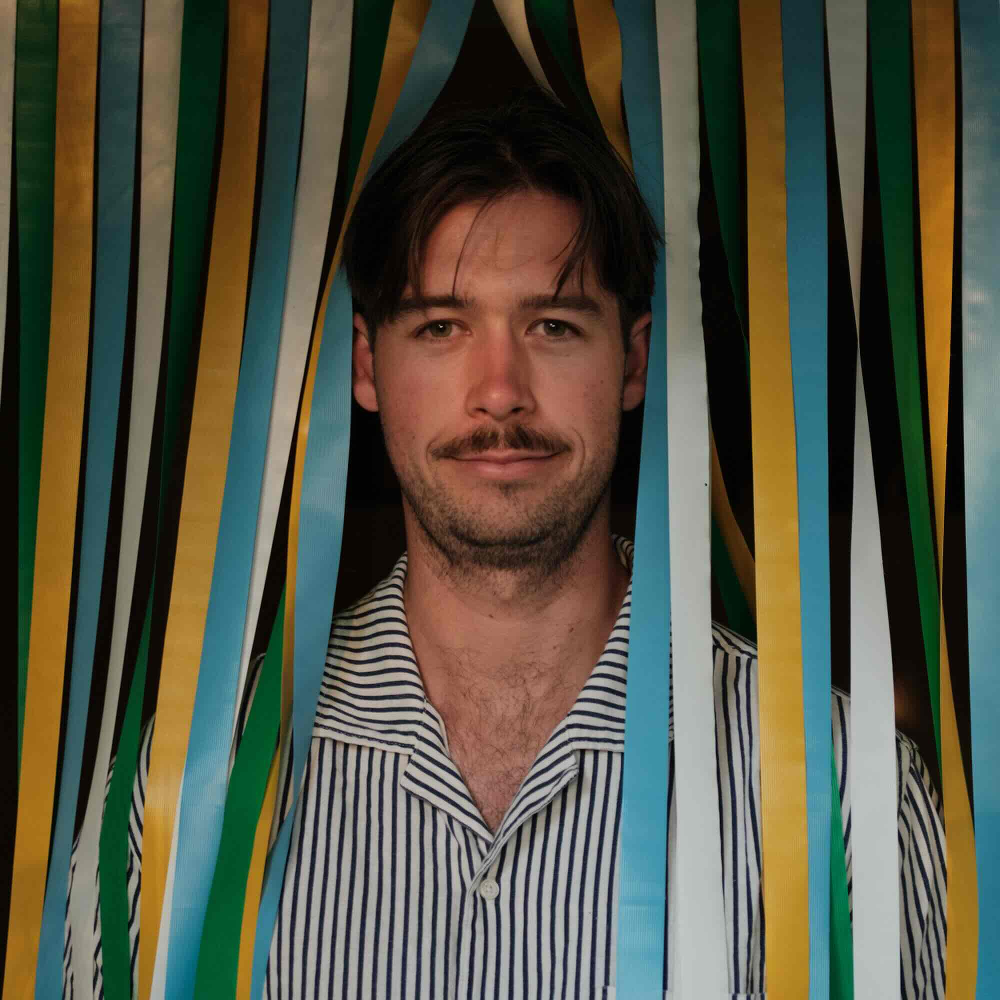

About
I’m Liam, currently located in Mt Maunganui, Tauranga and will be relocating to Auckland for the Dev Academy bootcamp!
In terms of values, I’ve recently become quite interested in the effects of tech on mental health and how we can better create tech solutions that support emotionally and physically healthy lifestyles. It’s a big topic but I’m fascinated about what the future of social media and other areas could look like. A part of my identity is that I love creating community and bringing people together, often through doing outdoor sports such as hiking and cycling.
I’ve worked in the marketing industry for six years as a photographer and designer and have loved it however, being part of the advertising world didn’t seem so satisfying to me after a while. My work was ending up on social media feeds where it was only viewed for a few short seconds and to me that felt quite purposeless. I've decided to get into coding as I want to use my creativity in a way that is more purposeful.
The dream is to work on products or services that help people in their everyday lives and I think programming looks like the perfect career path to be able to do that.
